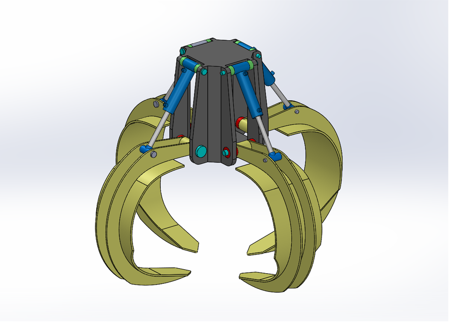
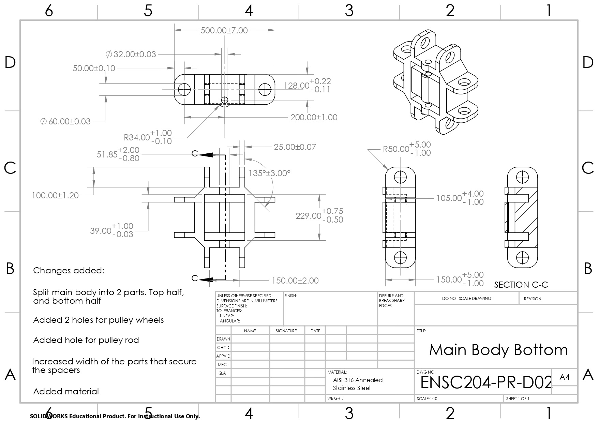

This project was for ENSC 204, Graphical Communication for Engineering. The requirements of the project were to take an existing design, and reengineer it for a different purpose. Me and my partner choose a hydraulic orange peel grabber and redesigned it to be mechanically driven and specialize in grabbing grain materials such as sand. In addition to a full SolidWorks model and a motion study, a full set of GD&T engineering drawings was given alongside material specifications; as these material specifications were not included with the original model.

Image of the original grabber design

Engineering drawing of the base piece with full tolerances
Motion study
Explosion animation
From this project and the course, I learned how to use SolidWorks primarily. As I worked on other projects in the class such as designing an engine in SolidWorks from engineering drawings, I gained a lot of experience with CAD software. Additionally, I learned how to make GD&T engineering drawings compliant with ASME Y14.5.
How do you even quote HOI4 you can't even make the naval invasion sound effect. “The Union of Soviet Republics has joined the Finnish-Siamese annexation war against Imperial Japan!”